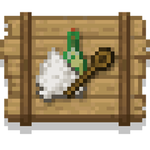
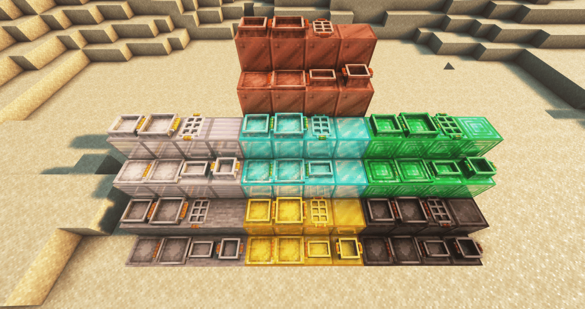
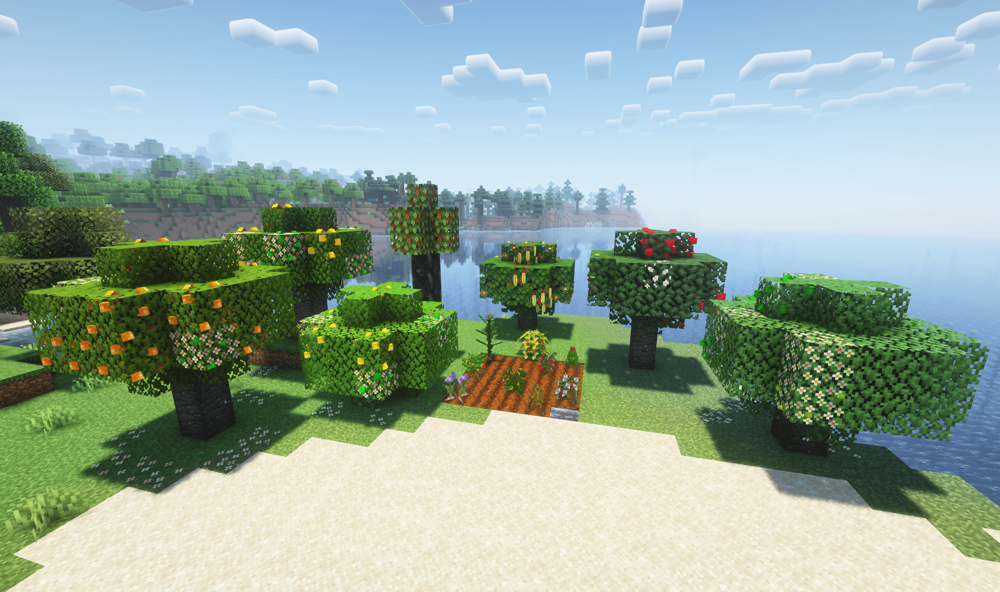
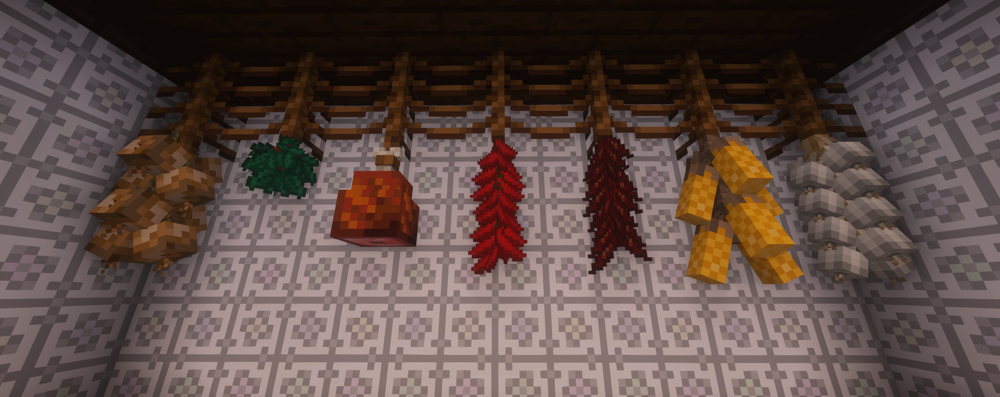
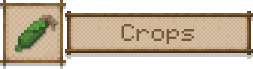
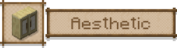

Welcome to the Extra Delight wiki!

"Extra Delight is a mod that vigorously expands upon farming and cooking in Farmer's Delight." - Blurb from the mod page
Hello there! Thanks for visiting the Extra Delight wiki!
Assuming that you are already familiar with the basics of parent mod Farmer's Delight, this site only covers mechanics unique to Extra Delight. It will also assume that you are using the Extra Delight recipe, not the Farmer's Delight one if it has both. Some ingredients, and therefore recipes, are available only with the Butchercraft mod. This will be noted on the relevant recipes.



Extra Delight adds a ton of new workstations and tools to the game to make new foods.

10+ crops have been added with Extra Delight to make a variety of new dishes.
Obviously, Extra Delight also adds many, many meals, feasts, and snacks to the game. In fact, there are over 350!

Not only does Extra Delight add food, but also several kitchen-related furniture items.
Mod FAQ
- Can I use this in my modpack? Of course! Just follow the rules of the license, don't rehost the .jar, and don't claim the mod as your own. Also no pay to play/cash shop modpacks or servers!
- Can you support an older version/backport features *cough 1.20.1*? No, never ask a modder that. I accept Pull Requests on GitHub though...
- Fabric? Sorry, no. I am not going to do it and, having seen how vectorwing gets mistakenly harassed about the port of Farmer's Delight someone else has done, I am not interested in going down that route either.
- How do I make Yeast? Have you tried searching for the term “Yeast” in JEI and looking at all the results? Or looking at the Advancements…?
- What’s with all these meaty/bloody recipes I can’t make? They require one of ED’s sister mods - Butchercraft!. Or any other meat mod that uses the same tags.
- Why can't I make (insert recipe name here)? Have you checked all the ingredients? If you are using Extra Delight in a modpack it is entirely possible you are using something like butter or flour from a different mod. And while Extra Delight uses tags in its recipes wherever possible… not all mods add their ingredients to the appropriate tags. If you are using something like JEI it should show you which versions of ingredients are able to be used. Otherwise try making the recipe with 100% Extra Delight ingredients, and if you’re still having trouble hop into the Discord and we’ll do our best to get you sorted!
- Why can’t I remove items from the Drying Rack or Mortar while holding a shield? This is just a vanilla thing with shift + right-click unfortunately. You’ll notice if you have a shield on you can’t open a door while crouching either.
- Why can’t I make Liquid Blood Chocolate? (Don’t have Butchercraft) Unfortunately the fluid ingredients are not as obvious when they aren’t available. If you mouse over the recipe you should see a fluid above the Cocoa Butter. This is where Blood would be if you had Butchercraft installed.
- Why can't I find the recipe for curry powder? At the moment, curry powder is chest loot only and there is no existing recipe. However, it is likely planned for a future update.
Curseforge |
Modrinth |
Bug Reports |
Discord |
Patreon